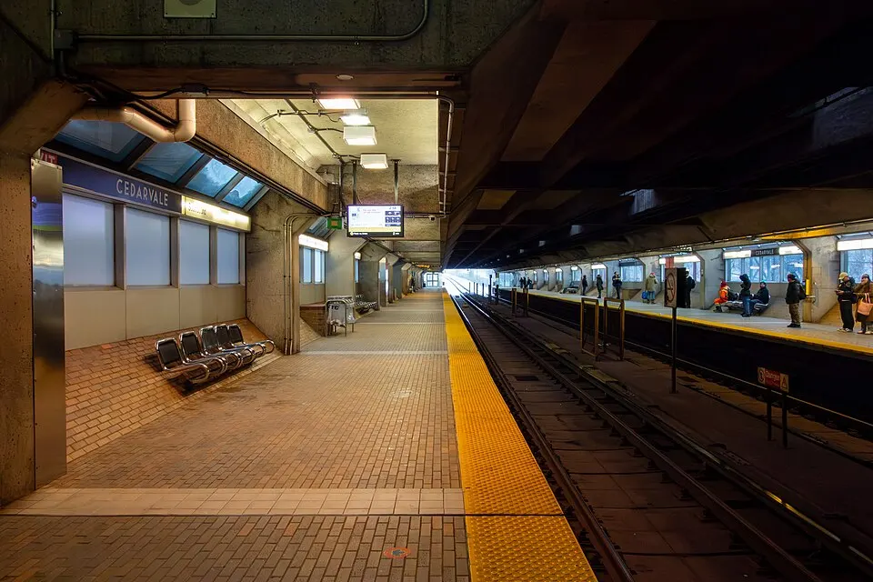

Signal
SignalStation atlas / Cedarvale
Station history
Cedarvale


Station history
The station opened as Eglinton West where trains emerge from the ravine tunnel into the Allen Road median. Gerald Zeldin depicted a Toronto streetcar on the platform walls.
Crews broke through the concrete separating two pedestrian tunnels to create the passage to the existing subway.
The TTC renamed Eglinton West for the Cedarvale neighbourhood.
The first Line 5 passenger service added an east–west light rail transfer.